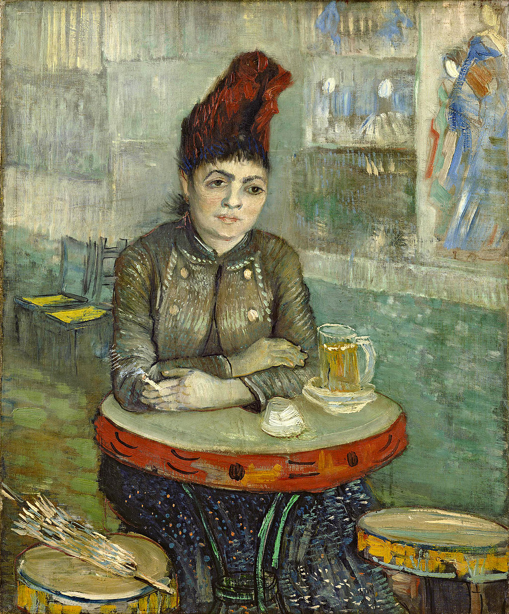

<head>
<meta charset="UTF-8" />
<meta name="keywords" content="drawing, painting" />
<meta name="description" content="drawings by Sunjy" />
<title>Sunjy</title>
<link rel="shortcut icon" type="image/x-icon" href="../../mImages/mCommon/favicon.ico" media="screen" />
<link rel="stylesheet" type="text/css" href="../../mCsses/mCommon/mCssA.css" />
<link rel="stylesheet" type="text/css" href="../../mCsses/mCommon/mCssB.css" />
<link rel="stylesheet" type="text/css" href="../../mCsses/mCommon/mCssC.css" />
<link rel="stylesheet" type="text/css" href="../../mCsses/mCommon/mCssD.css" />
<link rel="stylesheet" type="text/css" href="../../mCsses/mContent/mCssA.css" />
<link rel="stylesheet" type="text/css" href="../../mCsses/mContent/mCssB.css" />
<link rel="stylesheet" type="text/css" href="../../mCsses/mContent/mCssC.css" />
<link rel="stylesheet" type="text/css" href="../../mCsses/mContent/mCssD.css" />
</head>
<script type="text/javascript" src="../../mScripts/mContent/mContentAA.js" /></script>
<script type="text/javascript" src="../../mScripts/mContent/mContentAB.js" /></script>
<script type="text/javascript" src="../../mScripts/mContent/mContentAC.js" /></script>
<script type="text/javascript" src="../../mScripts/mContent/mContentAD.js" /></script>
<script type="text/javascript"></script> 
<script type="text/javascript">
document.write('<div class="mImgAbsolute"></div>');
/*
document.write('<p class="mFontSizeBColor" />From a white paper...</p>');
document.write('<table class="center"><tr><td>');
document.write('');
document.write('</td></tr></table>');
*/
</script>


<script type="text/javascript">
document.write('<p class="mFontSizeBColor" />Agostina Segatori Sitting in the Café du Tambourin</p>');
document.write('<p class="mFontSizeSColor" />“Agostina Segatori Sitting in the Café du Tambourin” by Vincent van Gogh depicts a woman smoking a cigarette while having a glass of beer. Agostina Segatori was the owner of the Café du Tambourin, and she knew Van Gogh.<br><br>Agostina Segatori is wearing a fashionable hat, and her jacket is a different design than her dress, which was the fashion of that time. <br><br>Her parasol sits on one of the seats next to her, and she is having her second glass of beer, as evidenced by two saucers under the mug of beer. Her clothing, make-up, hairstyle, her cigarette and drink all mark her as a modern woman.<br><br>The table and stools were in the shape of tambourines, aligning with the café’s theme and name. The theme of a woman sitting at a small table was introduced by the Impressionists artists, such as Edgar Degas and Édouard Manet.<br><br>Café du Tambourin was a gathering spot for Parisian artists, a place where their work was exhibited. On the wall behind her are van Gogh’s Japanese prints, which he began exhibiting at the café in February 1887.<br><br>Van Gogh was unable to pay in cash for his meals, so he exchanged paintings for his food and drink. The paintings then adorned the restaurant, and he held an exhibition of his Japanese prints in the café as well.<br><br>This brightly colored painting represents a shift in Van Gogh’s attitude compared to his earlier works depicting dark and tragic peasants.<br><br>This painting demonstrates his artistic exploration and his unique journey to the style we now understood and praise.<br><br>Vincent van Gogh’s relationship with Agostina and the cafe came to a sad end when she went bankrupt, and her creditors confiscated Van Gogh’s paintings.<br><br>Debtors sized Van Gogh’s art and sold them as canvases in batches of 10. Due to the bankruptcy of the cafe, Van Gogh lost many of his paintings, mostly still life works of flowers. This was a significant loss to Van Gogh.<br></p>');
document.write('<table class="center" /><tr><td>');
document.write('<br>Agostina Segatori is wearing a fashionable hat, and her jacket is a different design than her dress, which was the fashion of that time. <br><br>Her parasol sits on one of the seats next to her, and she is having her second glass of beer, as evidenced by two saucers under the mug of beer. Her clothing, make-up, hairstyle, her cigarette and drink all mark her as a modern woman.<br><br>The table and stools were in the shape of tambourines, aligning with the café’s theme and name. The theme of a woman sitting at a small table was introduced by the Impressionists artists, such as Edgar Degas and Édouard Manet.<br><br>Café du Tambourin was a gathering spot for Parisian artists, a place where their work was exhibited. On the wall behind her are van Gogh’s Japanese prints, which he began exhibiting at the café in February 1887.<br><br>Van Gogh was unable to pay in cash for his meals, so he exchanged paintings for his food and drink. The paintings then adorned the restaurant, and he held an exhibition of his Japanese prints in the café as well.<br><br>This brightly colored painting represents a shift in Van Gogh’s attitude compared to his earlier works depicting dark and tragic peasants.<br><br>This painting demonstrates his artistic exploration and his unique journey to the style we now understood and praise.<br><br>Vincent van Gogh’s relationship with Agostina and the cafe came to a sad end when she went bankrupt, and her creditors confiscated Van Gogh’s paintings.<br><br>Debtors sized Van Gogh’s art and sold them as canvases in batches of 10. Due to the bankruptcy of the cafe, Van Gogh lost many of his paintings, mostly still life works of flowers. This was a significant loss to Van Gogh.<br>" />');
document.write('</td></tr></table>');
</script>


